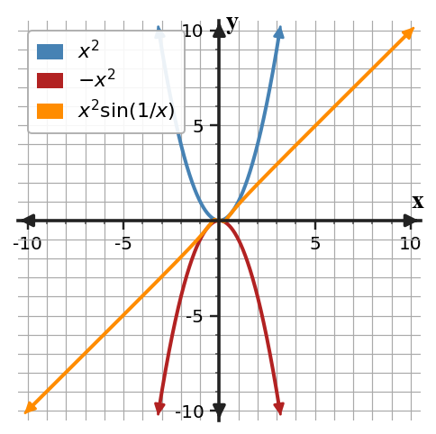
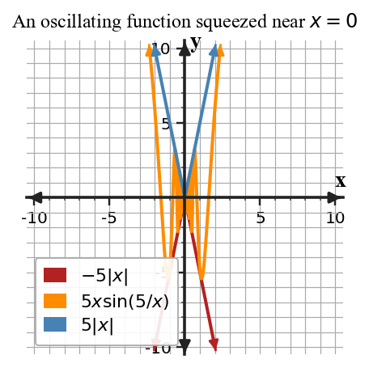

Core idea: A limit problem often becomes routine after you identify whether substitution works or an equivalent nearby expression is needed.
You will choose among substitution, factoring, conjugates, standard trigonometric limits, and squeeze reasoning.
Evaluate limits algebraically using direct substitution, limit laws, factoring, conjugates, and appropriate trigonometric or squeeze reasoning.
I can statements
Skim the terms now. Add meaning as each term is introduced in the notes.
This is a long-range preview for this section. Do not solve it yet. Circle anything familiar, underline symbols, labels, conditions, data, or features that seem important, and write short notes about what you think may matter later.

The orange curve stays between $-x^2$ and $x^2$ near $x=0$. Without evaluating the oscillating factor, predict $\lim_{x\to0}x^2\sin(1/x)$ and name the evidence that supports your prediction.
Directions
Read in short chunks. Annotate the prose and representations together. Mark evidence, conditions, important quantities, labels, patterns, and questions.
Direct substitution is the first check for many algebraic limits. For a polynomial, substituting the target input gives the limit immediately. More generally, the limit laws allow sums, products, constant multiples, powers, and quotients to be handled from component limits when the relevant hypotheses are satisfied; for a quotient, the limiting denominator must be nonzero.
If substitution produces a real number, stop and interpret that result. If it produces a form such as $0/0$, do not report “$0/0$” as the limit. It is an indeterminate form: the expression needs to be rewritten or another justified method must be chosen.
Stop and Discuss
1. Substitute.
If the result is a finite number and the operation is valid, use it.
2. Inspect the form.
If a removable $0/0$ form appears, look for an equivalent nearby expression.
3. Match structure.
Factor, rationalize, use a standard trig limit, or use bounds when the structure supports it.
Evaluate $\lim_{x\to2}(3x^2-x+1)$. State the method.
Evaluate $\lim_{x\to-1}(2x^2+5x-4)$.
Factoring can reveal a common factor that causes a removable $0/0$ form. After canceling a factor such as $(x-a)$, the simplified expression is equal to the original for nearby $x\ne a$. That is enough for a limit, because the limit depends on nearby values rather than the value at the point.
For expressions involving radicals, multiplying by a conjugate can create a difference of squares. The goal is not an arbitrary algebra trick: it is to build an equivalent expression near the target so that the limiting behavior becomes visible.
Stop and Discuss
For example, when $x\ne3$, $$\frac{x^2-9}{x-3}=\frac{(x-3)(x+3)}{x-3}=x+3.$$ The original and simplified expressions have the same nearby values, so they have the same limit as $x\to3$.
With radicals, $(\sqrt{A}-B)(\sqrt{A}+B)=A-B^2$, which can expose a factor that cancels.
Evaluate $\lim_{x\to3}\frac{x^2-9}{x-3}$.
Evaluate $\lim_{x\to4}\frac{x^2-16}{x-4}$.
Evaluate $\lim_{x\to0}\frac{\sqrt{x+9}-3}{x}$.
Evaluate $\lim_{x\to0}\frac{\sqrt{x+4}-2}{x}$.
The standard limit $$\lim_{u\to0}\frac{\sin u}{u}=1$$ becomes useful when an expression can be rewritten so the same quantity appears inside the sine and in the denominator. A constant scale factor can then be separated using limit laws.
The Squeeze Theorem applies when a function is trapped between two other functions near the target: if $g(x)\le f(x)\le h(x)$ near $x=a$ (apart from the point itself if necessary) and both outer functions have limit $L$, then $\lim_{x\to a}f(x)=L$. The conclusion comes from the shared outer limit, not from evaluating an oscillating factor directly.

Stop and Discuss
Standard sine limit
$\lim_{u\to0}\sin u/u=1$.
Squeeze hypotheses
$g(x)\le f(x)\le h(x)$ near $a$, and both outer limits equal $L$.
Squeeze conclusion
$\lim_{x\to a}f(x)=L$.
Use a standard trigonometric limit to evaluate $\lim_{x\to0}\frac{\sin(5x)}{x}$.
Evaluate $\lim_{x\to0}\frac{\sin(7x)}{x}$.
| Term / notation | Meaning in this section |
|---|---|
| direct substitution | Evaluate the expression at the target when the function/operations support doing so. |
| limit laws | Rules for combining known limits through sums, products, constant multiples, powers, and valid quotients. |
| factoring | Rewrite an algebraic expression to expose a cancelable factor while preserving nearby equality. |
| conjugate | The paired radical expression used to create a difference of squares, such as $\sqrt{A}+B$ for $\sqrt{A}-B$. |
| Squeeze Theorem | If a function is bounded between two functions with the same limit near the target, the middle function has that same limit. |
| Mistake | Why it is tempting | Check instead |
|---|---|---|
| Stopping at $0/0$. | It appears after direct substitution. | Treat it as an indeterminate form and choose a justified next method. |
| Canceling terms instead of factors. | Similar symbols appear in numerator and denominator. | Factor first; cancel only common multiplicative factors. |
| Using a conjugate without preserving equality. | The radical looks like the obstacle. | Multiply numerator and denominator by the conjugate so the expression remains equivalent. |
| Applying a quotient limit law with limiting denominator 0. | Limit laws feel automatic. | Check the denominator condition before using the quotient law. |
| Naming the Squeeze Theorem without bounds. | The middle function looks small or oscillatory. | State the bounding relationship and show both outer limits agree. |